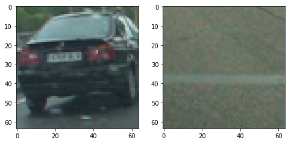
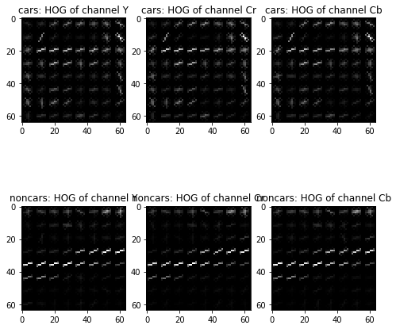

Vehicle Detection Project
The goals / steps of this project are the following:
You’re reading it!
The code for this step is contained in the cell-2 of the IPython notebook VehicleDetection.ipynb.
I started by reading in all the
vehicle
and
non-vehicle
images. Here is an example of one of each of the
vehicle
and
non-vehicle
classes:

I then explored different color spaces and different
skimage.hog()
parameters (
orientations
,
pixels_per_cell
, and
cells_per_block
). I grabbed random images from each of the two classes and displayed them to get a feel for what the
skimage.hog()
output looks like.
Here is an example using the
YCrCb
color space and HOG parameters of
orientations=9
,
pixels_per_cell=(8, 8)
and
cells_per_block=(2, 2)
:

I tried various combinations of parameters and didnt see much gain in increasing the HOG feature vector dimension so chose the default settings from lectures of
orientations=9
,
pixels_per_cell=(8, 8)
and
cells_per_block=(2, 2)
I trained a linear SVM using LinearSVC(). The corresponding code can be found in cell-3 of the IPython notebook VehicleDetection.ipynb.
I used LinearSVC() with YCrCb color space, HOG features for all channels with parameters
orientations=9
,
pixels_per_cell=(8, 8)
and
cells_per_block=(2, 2)
, color histogram as well as spatial binning feature.
When tested the stand alone SVM classifier on test data, I found following performance
1. YCrCb
- test performance = 0.9840
1. LUV
- test performance = 0.9893
1. HSV
- test performance = 0.9907
1. YUV
- test performance = 0.9870
1. HLS
- test performance = 0.9831
1. RGB
- test performance = 0.9780
While the stand alone performance of all the color spaces is not much different, I found that when test on video frames YCrCb performed best while trading off between false alarm and missed detection.
Sliding window search is implemented in cell-1 in the function find_cars().
I used 3 scale values [1, 1.5, 4]. I also used a region of interest in form of
xstart = 250
xstop = 1280
ystart = 400
ystop_array = [550, 550, 650]
where ystop values are chosen based on scale.
I searched on three scales using YCrCb 3-channel HOG features plus spatially binned color and histograms of color in the feature vector, which provided a nice result. Here is an example image where the two cars are detected.
Here’s a link to my video result
I implemented a class called BboxHistory() in cell-1 of the code. In this class I keep track of two lists. First is the list of bounding boxes detected positively by classifier as cars and second is the list of cars detected so far. I use a threshold on the first list to eliminate the false alarms. Sometimes the threshold elimination on first list can result in loss of previously detected car. So I use the second list to keep track of the detected cars position and apply a lower threshold to heatmap after masking with only car locations detected in earlier frames.
Essentially in this project I rely on setting correct thresholds to eliminate false alarms without compromising the missed detection rate. I also use averaging over past frames for both eliminating false alarm as well as cleaning heatmap for previously detected cars. This approach does not seem very friendly for generalization to various real world scenarios. Especially I am concerned about any technique that relies on thresholding. I think future direction to pursue would be to see what deep learning based approach gives.